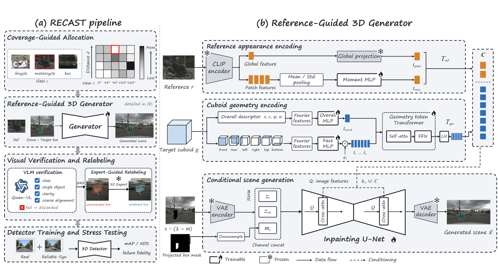
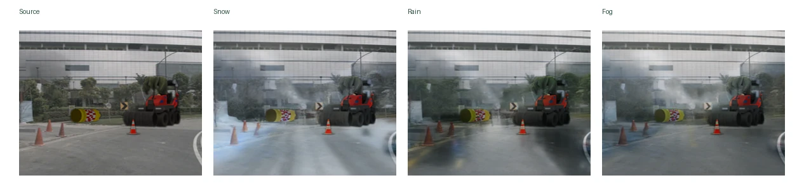
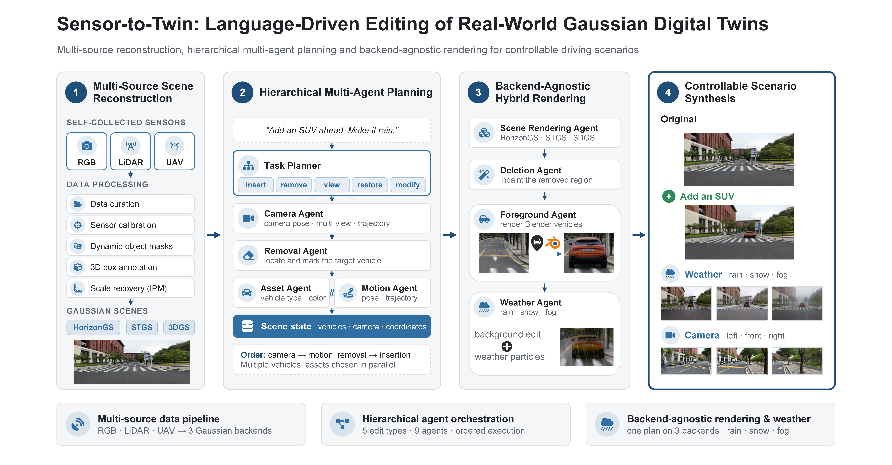
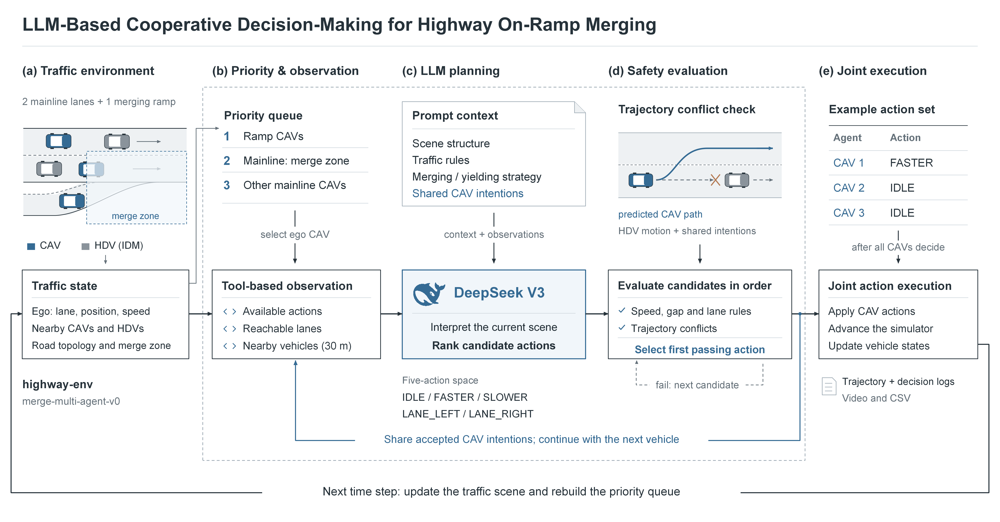

M.Eng. Student, School of Intelligent Systems Engineering
Sun Yat-sen University, Shenzhen
I am a third-year M.Eng. student at Sun Yat-sen University, advised by Prof. Xiaojun Tan. I received my B.Eng. in Intelligence Science and Technology from the same school in 2024.
My research is about building driving scenes that autonomous systems can be trained and tested on. I work on three connected steps: reconstructing editable 3D scenes from real sensor data, generating the rare and adverse cases that real data lacks while keeping their 3D labels reliable, and using these scenes to evaluate and improve perception and decision-making.
I am applying for Ph.D. programs starting Fall 2027. Feel free to reach out by email.

Key problemA generated vehicle often does not land exactly in the 3D box it was asked to fill, so that box cannot be trusted as its training label.
RECAST is a data engine for long-tail monocular 3D detection. Its generator separates what an object looks like from where it should appear: a reference crop supplies appearance through pooled image features, and the target 3D box supplies geometry through one overall cuboid token and six projected face tokens. Generation is directed toward sparse class, distance, and viewing-angle states. Each output is visually checked, and a frozen 3D detector re-estimates its box before it is used for training. RECAST follows commanded orientations more consistently than existing generators (yaw response gain 0.665 vs. 0.554 for MObI). On nuScenes, 22.9K accepted synthetic instances improve FCOS3D by +1.2 mAP and +1.1 Rare-5 AP over matched real replay, and the synthetic objects reproduce the detection difficulty of real ones.

Key problemStrong weather edits tend to blur or shift object boundaries, so the edited images can no longer be trusted with their original labels.
GeoWeatherEdit handles geometry before appearance. Object instances are built from SAM3D assets, checked for quality, and placed only where road region, ground contact, occupancy, and camera visibility allow. A training-free, one-step diffusion editor (ChordEdit) then adds snow, rain, or fog to the composited scene. In a pilot comparison with WeatherEdit, DriveGEN, and standard ChordEdit, it best preserved background structure (edge F1 0.531). Ablations and downstream 3D detection experiments are in progress.

Key problemA Gaussian reconstruction can look photorealistic yet lack the metric scale and scene structure needed to place and move objects in it.
Starting from self-collected campus data, I reconstructed driving scenes with three Gaussian backends: camera only (3DGS), vehicle cameras plus LiDAR (Street Gaussians), and ground plus UAV images (HorizonGS). This involved calibration, dynamic-object masks, 3D box and lane annotation, and tracing floating artifacts to a ~90 ms camera–LiDAR timing offset. I recovered metric scale from lane geometry and inverse perspective mapping, so inserted vehicles respect lanes, collisions, and visibility. On top, I re-engineered an open-source LLM multi-agent editor to run on all three backends: a task planner splits a language instruction into edits, and specialized agents change the viewpoint, insert, remove, or move vehicles, and add rain, snow, or fog through a shared scene state. Edits are demonstrated on campus scenes and public driving datasets.

Key problemAn LLM can propose sensible driving actions, but in a multi-vehicle merge it needs real traffic information and a hard safety check before it acts.
In HighwayEnv, I built an on-ramp merge with connected and human-driven vehicles at 25%, 50%, and 75% connected-vehicle penetration. Connected vehicles decide in priority order. Each runs an LLM agent that queries legal actions, reachable lanes, nearby vehicles, and trajectory conflicts through tools, keeps the first action that passes rule and conflict checks, and shares it as an intent with the vehicles that decide next. In an 8-vehicle scenario it achieved a higher merge success rate than rule-based, virtual-queue, and game-theoretic baselines, with no potential conflicts, and every vehicle merged successfully at all three penetration rates.
I play on the Sun Yat-sen University women's volleyball team: two-time champion of the Guangdong Provincial University Games (2021, 2025), Guangdong Provincial League Division A champion (2024), and National University League runner-up (2025). I also serve as deputy head of refereeing for the SYSU Shenzhen Volleyball Association.